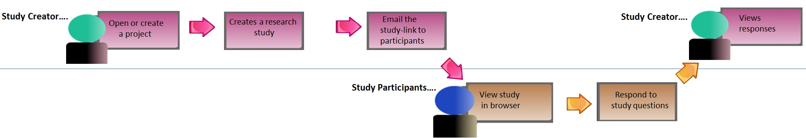

The Build user research module enables you to quickly create and share user research studies to gather feedback from colleagues or end-users about images, project pages, or complete interactive Norman or Axure HTML prototype applications. Team members of a project can create user research studies about that project. In the project, you create the user research study by adding images and asking questions about those images. Then you publish the study to generate a study-link, which you can send to third parties by email.
The participants can open the URL in their browser, and respond to the questions. You and your team members can then review the responses in Build.

Build User Research Study Worklow
You must have created or be a member of a project before you can create a user research study.
Email the study-link to third parties.
The third parties display the user research study in their browser and respond to the study questions.
You and other project team members can view the participants' responses.